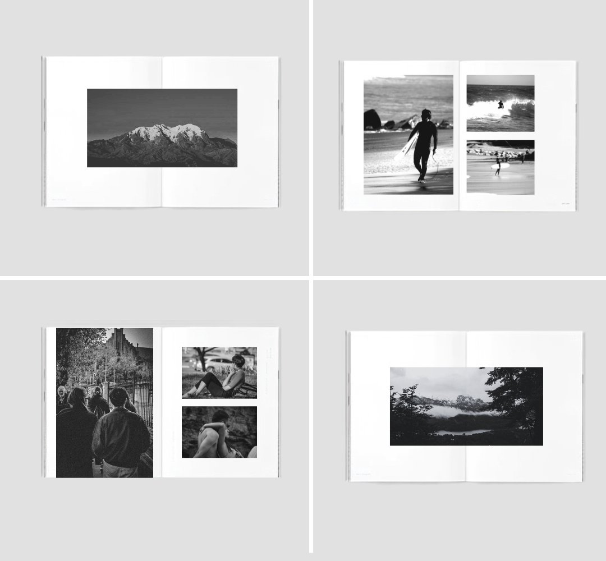

Frames
A two-year visual practice — the eye behind the strategy.

The Challenge
Strategy without taste produces work that's technically right and visually flat. Frames is my answer to that — a personal, ongoing practice that exists so the strategist never loses the eye.
The Approach
Two years of shooting across landscapes, environments, and unscripted scenes. Different formats, different lighting, different angles — but one sensibility: the search for the moment when a place stops being a backdrop and starts being a character.
The Outcome
An evolving body of work that informs every creative decision I make for client brands — from the photography I direct on shoots, to the references I send when building a brand's visual world.
The landscapes. The frames where the place finally tells you what it is.